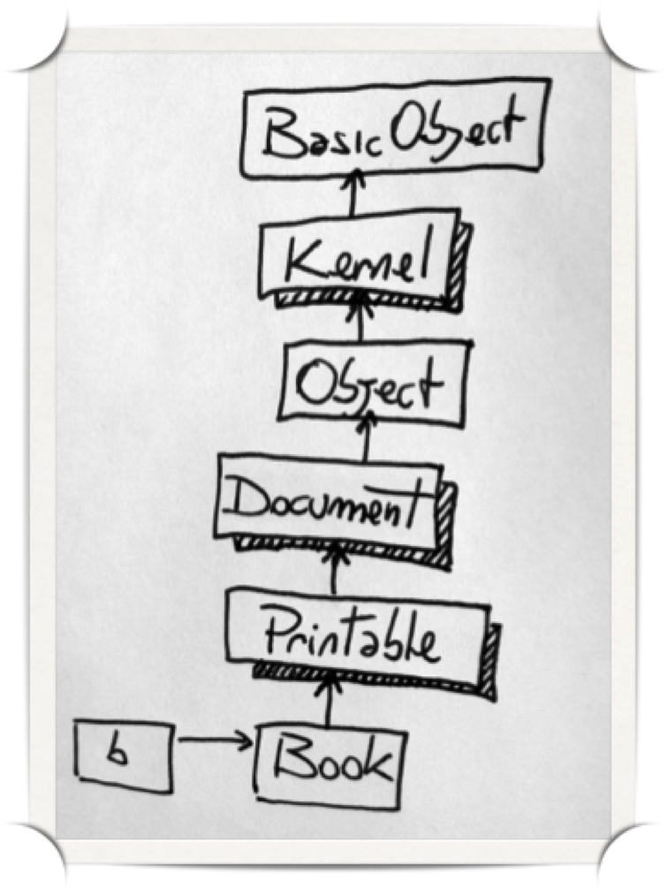
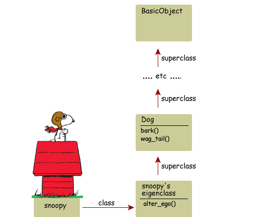

Method lookup chain example
Method lookup chain example

Calling methods dynamically
The most common way for dynamic method calling is to send a message to object.
A Method object represents a chunk of code and a context in which it executes. Once we have our Method object, we can execute it sometime later by sending it the message call.
Or just eval
Instantiating a method object is the fastest dynamic way in calling a method, eval is the slowest one. Also when sending a message to an object, or when instantiating a method object, you can call private methods of that object.
Defining methods dynamically
You can define a method on the spot with define_method(). You just need to provide a method name and a block, which becomes the method body.
Undefining methods
A method can be undefined any time, as well as defined.
Undefining class
Method missing
When you send a message to an object, the object executes the first method it finds on its method lookup path with the same name as the message. If it fails to find any such method, it end up with method_missing method, where a NoMethodError exception is raised unless you have provided other behavior for it. The method_missing method is passed the symbol of the non-existent method, an array of the arguments that were passed in the original call and any block passed to the original method.
Method missing
When defining dynamic methods with method_missing, the good practice is to add the same behavior to respond_to?
Class and Instance variables
instance_variable_get(), instance_variable_set(), instance_variable_defined?()
Scope
Scope defines where in a program a variable is accessible. Scope changes whenever the program enters (or exits) a class or module definition or a method. These three borders are marked by the keywords class, module, and def, respectively. Each of these keywords acts like a Scope Gate.
Blocks and local variables
Blocks behave like closures, they capture the scope they are defined at.
Blocks and local variables
Methods with shared variable
Binding
In Ruby current binding can be captured, and any code can be evaluated in that captured scope, any time.
instance_eval and instance_exec
instance_eval method evaluates a string containing Ruby source code, or the given block, within the context of the receiver (obj).
Class eval
class_eval (also known by its alternate name, module_eval) evaluates a block in the context of an existing class.<.div>


←
→
Understanding Ruby Blocs, Procs, Lambdas, Methods
So, what is going on here?
- First, we send the collect! method to an Array with a block of code.
- The code block interacts with a variable used within the collect! method (n in this case) and squares it.
- Each element inside the array is now squared.
Block
Convert the block to a Proc
Procedures, AKA, Procs
The only difference between blocks and Procs is that a block is a Proc that cannot be saved, and as such, is a one time use solution.
callbacks
So, when should you use blocks over Procs?
- Block: Your method is breaking an object down into smaller pieces, and you want to let your users interact with these pieces.
- Block: You want to run multiple expressions atomically, like a database migration.
- Proc: You want to reuse a block of code multiple times.
- Proc: Your method will have one or more callbacks.
Lambdas
Lambdas check the number of arguments
Lambdas have lesser returns
Lambdas have lesser returns
Lambdas have lesser returns
Method Objects
Method Objects binding
Conclusion
- blocks and Procs act like code snippets
- lambdas and Methods act like methods
Singleton Methods
A Singleton method is a method which belongs to a single object rather than to an entire class and other objects.
Anonymous class or Eigenclass

Runtime introspection
class macros
class methods syntax
class attributes
module trouble
Object#extend
Method aliases
What happens if you alias a method and then redefine it?
Hook methods
Class plus instance methods
hometask
/
#